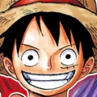
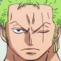
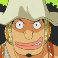
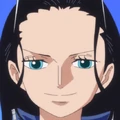
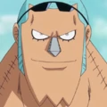
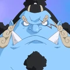

| № | сила | ум и разум | скорость | хитрость | общая оценка |
|---|---|---|---|---|---|
|  Монки Д. Луффи |
10 | 5 | 9 | 4 | 8.9 |
|  Ророноа Зоро |
10 | 8 | 9 | 9 | 9.8 |
Нами |
7 | 10 | 7 | 10 | 7.6 |
|  Усопп |
8 | 10 | 8 | 10 | 11 |
Винсмок Санджи |
9 | 9 | 9 | 9 | 9 |
Тони Тони Чоппер |
7 | 9 | 6 | -10 | 6.4 |
|  Нико Робин |
10 | 10 | 10 | 10 | 10 |
|  Фрэнки |
8 | 9 | 6 | 8 | 8.9 |
Брук |
9 | 8 | 10 | 8 | 9.8 |
|  Дзимбэй |
9 | 8 | 9 | 7 | 8.7 |